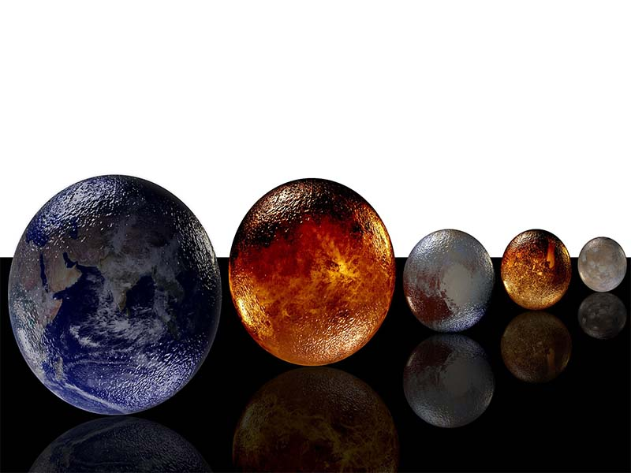

El Sistema Solar es un conjunto formado por el Sol y los cuerpos celestes que orbitan a su alrededor.
Está formado por el Sol y una serie de cuerpos que están ligados con esta estrella por la gravedad: ocho grandes planetas (Mercurio, Venus, Tierra, Marte, Júpiter, Saturno, Urano y Neptuno), junto con sus satélites, planetas menores (entre ellos, el ex-planeta Plutón), asteroides, cometas, polvo y gas interestelar.
Pertenece a la galaxia llamada Vía Láctea, formada por miles de millones de estrellas, situadas a lo largo de un disco plano de 100.000 años luz.
El Sistema Solar está situado en uno de los tres brazos en espiral de esta galaxia llamado Orión, a unos 32.000 años luz del núcleo, alrededor del cual gira a la velocidad de 250 km por segundo, empleando 225 millones de años en dar una vuelta completa, lo que se denomina año cósmico.
Los astronomos clasifican clasifican los planetas y demás cuerpos de nuestro Sistema Solar en tres categorías:
Primera categoría: Un planeta es un cuerpo celeste que está en órbita alrededor del Sol, con una masa suficiente para tener gravedad propia y mantener el equilibrio hidrostático de manera que asuma una forma redonda, y que ha despejado las inmediaciones de su órbita.
Segunda categoría: Un planeta enano es un cuerpo celeste que está en órbita alrededor del Sol, que tiene suficiente masa para tener gravedad propia para superar las fuerzas rígidas de un cuerpo de manera que asuma una forma equilibrada hidrostática, es decir, redonda; que no ha despejado las inmediaciones de su órbita y que no es un satélite.
Tercera categoría: Todos los demás objetos que orbitan alrededor del Sol son considerados colectivamente como "cuerpos pequeños del Sistema Solar".
{kind=link}